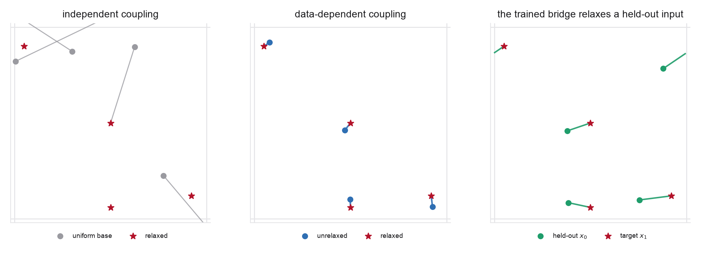

- The interpolant training and sampling loop (Problems 1-3)
- Data-dependent couplings \((x_0,x_1)\sim\pi\) (Problem 1 part 6)
- Why marginal-flow trajectories cannot cross (Week 3 Problem 2, parts 2 and 4)
- The flat torus, minimum-image wrapping, and geodesic interpolation (Week 3 Problem 4)
- Periodic translation invariance and the mean-free tangent fix (Week 3 Problem 4)
- Fractional coordinates as a crystal representation (Week 3, FlowMM)
- Albergo et al. (Data-Dependent Couplings), §3 (construction §3.2, validity theorem §3.1)
- Hoellmer et al. (OMatG) for the crystal setting: stochastic interpolants on the continuous fields, discrete flow matching on atom types
- Week 3 Problem 4 for the torus geometry, wrapping, and mean-free construction you reuse
- Week 4 Problem 2 for the ODE/SDE sampler you carry over
Scope. Two ideas layered on Week 3 Problem 4's torus. First, a data-dependent coupling: the base distribution is no longer noise but a distribution of unrelaxed structures, each paired with its own relaxed target. Second, the interpolant runs between them on the periodic torus. This is the smallest model that is a stochastic bridge between two meaningful ensembles rather than a noise-to-data generator, the setting the data-dependent-couplings paper opens and Week 9 completes.
Data layout. Use \(d=2\) fractional coordinates and \(n\ge2\) atoms, so a configuration is a point cloud on the torus \(X\in\mathbb T^{n\times2}\), as in Week 3 Problem 4. Build a small set of relaxed motifs \(X_1\) (the target crystal sites, some near cell boundaries so wrapping matters). Generate each unrelaxed partner \(X_0\) by a physically-flavored perturbation of its own \(X_1\): a wrapped Gaussian displacement of each site, optionally a small global shift, so that \((X_0,X_1)\) are genuinely paired, not independent. This paired set is your coupling \(\pi\); part 4 contrasts it with two baselines, a shuffled pairing that keeps the same unrelaxed base ensemble but destroys the pairing (same marginals, different coupling), and a noise-to-data pairing that replaces the base by a fresh uniform-on-torus \(X_0\).
Every earlier problem this week paired a data sample with independent noise. But nothing in the interpolant required the base to be noise: the velocity and score derivations used only that \((x_0,x_1)\) has the right marginals, and Problem 1 part 6 showed an arbitrary coupling keeps them valid. When the base is itself a meaningful distribution, and each source is paired with a specific target, the interpolant becomes a learned, stochastic map between ensembles. Structure relaxation is the canonical materials instance: an unrelaxed guess (from substitution, from a fast surrogate, from a distorted template) is mapped to its relaxed minimum. This lab builds that map on the torus and shows what the dependent coupling buys.
The trap this lab exists to spring. It is tempting to reason: "the ODE starts at \(x_0\) and ends at \(x_1\), so training on a dependent \(\pi\) makes the model map each input to its own target." This is false. The marginal velocity \(b_t(x)=\mathbb E[\dot x_t\mid x_t{=}x]\) is a posterior average: it forgets which \(x_0\) a trajectory came from. Its flow map is therefore always a deterministic, non-crossing rearrangement of \(\rho_0\) onto \(q\) (Week 3 Problem 2: trajectories of a well-posed ODE cannot cross), which is in general a different coupling from the \(\pi\) you trained on. Training on \(\pi\) does not make the ODE realize \(\pi\); this is the same fact reflow exploits. The fix, and what the data-dependent-couplings paper actually does, is to condition the fields on the base sample: \(b_\theta(x_t,t,x_0)\) and \(\eta_\theta(x_t,t,x_0)\). Then there is a separate ODE for every \(x_0\), trajectories from different \(x_0\) may cross freely in \(x\)-space, and the model learns the conditional law \(\pi(x_1\mid x_0)\). Part 4 makes you see both sides of this.

Implement a small set of functions, reusing the torus utilities from Week 3 Problem 4.
wrap_disp(u) # minimum-image displacement into [-0.5, 0.5) to_cell(x) # wrap coordinates into [0, 1) make_pairs(n_pairs) # (X0, X1): unrelaxed structure and its relaxed target geodesic(x0, x1, t) # to_cell(x0 + t * wrap_disp(x1 - x0)) interp_dot_torus(x0, x1, z, t) # tangent velocity target with latent term, wrapped loss_interp(model, batch) # velocity (+ optional score) regression on the torus model(x_t, t, x0=None) # set cond=True to condition the fields on the base sample x0 sample_bridge(model, x0, eps, n_steps) # ODE/SDE sampler, wrapping each step mean_free(delta) # atomwise-mean-free tangent (periodic translation fix) shuffled_baseline(X0, X1) # same marginals, pairing destroyed: permute X0 against X1 noise_baseline(...) # same model, X0 ~ uniform-on-torus, independent of X1 relaxation_error(pred, X1) # gauge-invariant wrapped distance to the true relaxed target
Conventions to fix before you start.
Atoms are labeled and ordered. Every function above (wrap_disp(X1-X0),
mean_free, relaxation_error) compares atom \(i\) of \(X_0\) with atom \(i\) of
\(X_1\), so the lab assumes a fixed, consistent atom ordering across each pair, with \(n\) and \(d=2\)
fixed. A real crystal is invariant under relabeling, and OMatG must choose an assignment; here do
not minimize over permutations unless you take that on as extra credit. Say so explicitly in your
notebook, because it is the first thing this miniature assumes away.
The default interpolant is deterministic. Take \(\gamma_t\equiv0\) for the required parts. The latent term, the score head, and the SDE sampler are needed only for the optional part 6(b), and they carry the wrapped-Gaussian subtlety flagged in part 2.
Gauge. The relaxed ensemble is translation invariant (a crystal is defined only up to a global
fractional shift), so relaxation_error is computed in the gauge quotient: with
\(\delta=\mathrm{wrap\_disp}(Y-X_1)\) and \(\bar\delta=\tfrac1n\sum_i\delta_i\),
\[ \mathrm{err}_{\mathrm{gauge}}(Y,X_1)=\Big(\tfrac1n\textstyle\sum_i\big\|\delta_i-\bar\delta\big\|^2\Big)^{1/2}. \]
Report the raw (non-gauge-fixed) error alongside it, and note that a mean-free
(translation-equivariant) model is by construction forbidden to correct a global-shift component
of the unrelaxation.
Two questions, two metrics. "Is the output a valid relaxed structure?" is the minimum \(\mathrm{err}_{\mathrm{gauge}}\) over the finite set of relaxed motifs (distance to the relaxed ensemble). "Is it this input's relaxed structure?" is \(\mathrm{err}_{\mathrm{gauge}}\) against the paired \(X_1\). Most of part 4 turns on the gap between them.
Controls. Use fixed train/test splits and hold the architecture, optimizer, solver, step count and seed identical across the dependent, shuffled, and noise runs. The whole lab is a comparison; if these drift, nothing in the part-4 table means anything.
- Build the paired ensembles. Construct the relaxed targets \(X_1\) and their unrelaxed partners \(X_0\) as described, so the coupling \(\pi=\mathrm{law}(X_0,X_1)\) is dependent (each \(X_0\) is a perturbation of its own \(X_1\)). Visualize a few pairs on the torus and confirm the per-pair wrapped displacement \(\mathrm{wrap\_disp}(X_1-X_0)\) is small and local, the signature of a good coupling. Contrast with the independent baseline, where \(X_0\) is uniform on the torus and the displacements are large and global.
- The interpolant on the coupling. Form the toroidal interpolant along the geodesic, \(x_t=\mathrm{to\_cell}(x_0+t\,\mathrm{wrap\_disp}(x_1-x_0))\). With the default \(\gamma_t\equiv0\), regress \(v_\theta(x_t,t)\) onto the tangent velocity target \(d=\mathrm{wrap\_disp}(x_1-x_0)\), exactly the Problem 1 objective with the dependent \(\pi\) and the torus geometry of Week 3 Problem 4. Keep the wrapping straight: you wrap positions, never tangent vectors. The displacement \(d\) is already the minimum-image representative and lives in the tangent space; wrapping it again is a bug. (Build the network so that conditioning on \(x_0\) is a flag you can switch on; part 5 needs it. Optionally, for the score head of part 6(b), thicken the path with a wrapped latent \(\gamma_t z\), \(z\sim\mathcal N(0,I)\), \(\gamma_0=\gamma_1=0\), a stated interior schedule such as \(\gamma_t=c\sqrt{2t(1-t)}\), whose peak is \(\gamma_{\max}=c/\sqrt2\) at \(t=\tfrac12\); take \(\gamma_{\max}\ll\tfrac12\) (e.g. \(c=0.1\), so \(\gamma_{\max}\approx0.07\)). The tangent target becomes \(d+\dot\gamma_t z\). Note that a wrapped Gaussian's score is a theta function rather than \(-z/\gamma_t\), and that the Euclidean form is an approximation, excellent for \(\gamma_t\ll\tfrac12\), which you should state rather than hide.) Confirm the losses descend and that the conditional chords are short because the coupling is local. Compare the loss floors across the three couplings of part 4 and explain what differs. In the ideal regression limit the irreducible loss is the posterior variance \(\mathbb E\|\dot x_t-\mathbb E[\dot x_t\mid x_t]\|^2\) of Problem 1 part 4, and that is what the coupling changes; in your finite notebook the measured floor also contains architecture and optimization error and finite-sample noise, so say how you separated them, or say that you could not, rather than attributing the whole gap to posterior variance.
- Relax a held-out structure. Take unrelaxed configurations not seen in training,
integrate the flow from \(t=0\) to \(t=1\) (start with the ODE, \(\epsilon=0\)), wrapping each step, and
compare the output to the true relaxed target with
relaxation_error(wrapped distance). Show the bridge moves each unrelaxed structure onto its relaxed site along the short periodic path, and report the error distribution over held-out pairs. - Dependent versus independent coupling: what \(\pi\) actually buys. Train the identical
model on two baselines. (a) The noise-to-data baseline: relaxed targets paired with
uniform-on-torus base points. (b) The shuffled baseline: keep the same unrelaxed ensemble as the
base, but pair each \(X_1\) with an unrelaxed \(X_0\) drawn independently from that ensemble rather than
with its own partner. Baseline (b) is the one Problem 1 part 6 actually describes: it holds both marginals
\(\rho_0,q\) fixed and changes only the coupling, so any difference from the dependent model is
attributable to \(\pi\) alone; baseline (a) additionally changes the base distribution. Use (b) as the
control that separates the two effects, and fill in a table whose columns you define exactly
before you run anything, since each admits several conventions:
- Transport cost: \(\mathbb E\|\mathrm{wrap\_disp}(X_1-X_0)\|^2\), computed on the raw pairs (a property of \(\pi\) as you built it, so not gauge-fixed).
- Training-loss floor: the plateau value, with the caveat from part 2.
- ODE path length: \(\sum_k\|\mathrm{wrap\_disp}(X_{t_{k+1}}-X_{t_k})\|\), summing minimum-image step lengths along the sampled trajectory.
- NFE to convergence: the smallest step count whose relaxation error is within a stated tolerance of the many-step limit. Fix the tolerance once and reuse it.
- Structure quality: minimum \(\mathrm{err}_{\mathrm{gauge}}\) to any relaxed motif.
- Relaxation error: \(\mathrm{err}_{\mathrm{gauge}}\) to the paired \(X_1\), on held-out \(X_0\).
- A coupling the marginals cannot pin, and the failure of the naive bridge. Now build a dataset where relaxation is not nearest-point projection, the physical case of an initial guess that lands in the wrong basin. Take two relaxed motifs \(A,B\) and build the pairs explicitly, so the failure is guaranteed rather than hoped for: \[ X_0^{A}=\mathrm{to\_cell}\big(A+\lambda\,\mathrm{wrap\_disp}(B-A)+\xi\big),\qquad X_1^{A}=A, \] \[ X_0^{B}=\mathrm{to\_cell}\big(B+\lambda\,\mathrm{wrap\_disp}(A-B)+\xi\big),\qquad X_1^{B}=B, \] with \(\lambda=0.65\), small \(\xi\sim\mathcal N(0,\varsigma^2I)\), \(\varsigma\) well below the \(A\)-to-\(B\) separation, and the same fixed atom ordering in both motifs. Each guess now sits nearer the other minimum than its own, and the two families of chords cross. Choose \(A\) and \(B\) far enough apart that the two \(X_0\) clusters are clearly separated, and check by eye that they are: if the clusters overlap, the effect below will be muddied by noise rather than driven by the coupling. Only the pairing knows where each structure belongs. Train the naive \(b_\theta(x_t,t)\) on this dependent \(\pi\) and observe that it confidently returns the wrong minimum. Explain the failure with the argument from the blue box: this \(\pi\) is maximally crossing, and the marginal ODE cannot cross, so it delivers each input to the target on its own side, generating exactly the right marginal with exactly the wrong pairing. Then fix it by conditioning, \(b_\theta(x_t,t,x_0)\) (and \(\eta_\theta(x_t,t,x_0)\) if you carry the latent), and show it now relaxes correctly. Finally run the conditioned shuffled control and observe that it still fails, because for it \(\pi(x_1\mid x_0)=q\) and the conditioning input carries no information. Conclude: conditioning is necessary, conditioning on a meaningless coupling is useless, and you need both. State how this revises the slogan "a data-dependent coupling makes the model a translator."
- Periodicity and the stochastic sampler. Carry over the two tools from earlier problems. (a) Apply the mean-free tangent construction of Week 3 Problem 4 and be precise about what it does and does not buy. Subtracting the atomwise-mean tangent removes the global translation mode, so the field conserves the centroid; it does not by itself make the model translation equivariant. Full equivariance additionally needs a shift-equivariant architecture, relative coordinates, or explicit centering. Test the difference: shift the input globally, and split the residual into its centroid and internal parts. The centroid part should be machine zero (a mean-free field cannot move the centroid); the internal part will not be, and that gap is exactly the equivariance the mean-free target does not supply. Attribute it honestly to the architecture rather than the target, since an MLP on absolute periodic features \((\sin2\pi x,\cos2\pi x)\) is not shift-invariant. Confirm the mean-free target costs nothing in accuracy. (b) Turn on the SDE sampler (\(\epsilon>0\), Problem 2) and report its effect on the relaxation. You should find that every \(\epsilon>0\) hurts, in contrast to Problem 3. Give the three structural reasons: a bridge between nearby ensembles has small \(e^b\) for the Langevin term to contract (its loss floor in part 2 says so); the task is scored conditionally (right output for this input) rather than marginally, so injected noise is irreducible error rather than harmless reshuffling; and \(s_\theta=-\eta_\theta/\gamma_t\) with a small \(\gamma_{\max}\) amplifies the weaker head. Stochasticity is free only when you are scored on the marginal.
- Toward OMatG and the Schrödinger bridge. Write a short paragraph on two extensions you did not implement. (a) The full crystal: OMatG applies stochastic interpolants to the continuous structural fields, fractional coordinates and lattice vectors, and couples them to discrete flow matching for the categorical atom types. Explain why a data-dependent coupling is natural there (relaxation and structure prediction pair specific inputs to specific outputs across the fields) and why the atom-type field is exactly the one a continuous interpolant cannot swallow, which is what forces the discrete machinery (Week 7). Note also that OMatG's own use of a dependent coupling is a narrower device than yours: an optional element-order permutation applied during training, which its linear and trigonometric interpolants favor while its encoder-decoder and SBD interpolants do without. Your conditioned bridge between two physical ensembles is the more general construction, not the one OMatG runs. (b) The Schrödinger bridge: your coupling was fixed by construction (you built the pairs), but the right coupling between two ensembles is the one that is also entropically optimal. Be precise about what that means, because "minimizes transport cost subject to matching the marginals" is optimal transport, not the bridge: the Schrödinger bridge minimizes KL divergence on path space against a reference diffusion, subject to the two endpoint marginals, and only approaches an optimal-transport coupling in the small-noise limit. State what your lab assumed away: the pairing itself, which you manufactured; any notion of its optimality (indeed your part-5 coupling is deliberately, maximally non-optimal, which is precisely why the unconditioned ODE could not realize it); and the possibility that \(\pi(x_1\mid x_0)\) is genuinely spread rather than nearly deterministic. Then state what Week 9 adds: the coupling as a solved optimization rather than a given.